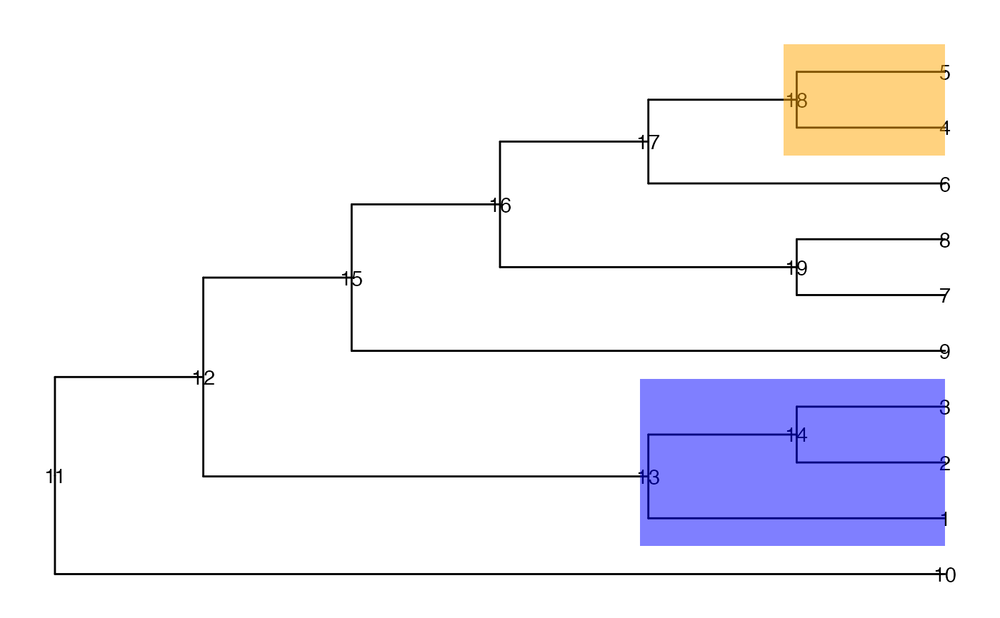

Evaluate all candidate levels proposed by getCand and select
the one with best performance. For more details about how the scoring is
done, see Huang et al (2021): https://doi.org/10.1186/s13059-021-02368-1.
Usage
evalCand(
tree,
type = c("single", "multiple"),
levels,
score_data = NULL,
node_column,
p_column,
sign_column,
feature_column = NULL,
method = "BH",
limit_rej = 0.05,
use_pseudo_leaf = FALSE,
message = FALSE
)Arguments
- tree
A
phyloobject.- type
A character scalar indicating whether the evaluation is for a DA-type workflow (set
type="single") or a DS-type workflow (settype="multiple").- levels
A list of candidate levels that are returned by
getCand. Iftype = "single", elements in the list are candidate levels, and are named by the value of the tuning parameter. Iftype = "multiple", a nested list is required and the list should be named by the feature (e.g., genes). In that case, each element is a list of candidate levels for that feature.- score_data
A
data.frame(type = "single") or a list ofdata.frames (type = "multiple"). Eachdata.framemust have at least one column containing the node IDs (defined bynode_column), one column with p-values (defined byp_column), one column with the direction of change (defined bysign_column) and one optional column with the feature (feature_column, fortype="multiple").- node_column
The name of the column that contains the node information.
- p_column
The name of the column that contains p-values of nodes.
- sign_column
The name of the column that contains the direction of the (estimated) change.
- feature_column
The name of the column that contains information about the feature ID.
- method
method The multiple testing correction method. Please refer to the argument
methodinp.adjust. Default is "BH".- limit_rej
The desired false discovery rate threshold.
- use_pseudo_leaf
A logical scalar. If
FALSE, the FDR is calculated on the leaf level of the tree; IfTRUE, the FDR is calculated on the pseudo-leaf level. The pseudo-leaf level is the level on which entities have sufficient data to run analysis and the that is closest to the leaf level.- message
A logical scalar, indicating whether progress messages should be printed.
Value
A list with the following components:
candidate_bestThe best candidate level
outputNode-level information for best candidate level
candidate_listA list of candidates
level_infoSummary information of all candidates
FDRThe specified FDR level
methodThe method to perform multiple test correction.
column_infoA list with the specified node, p-value, sign and feature column names
More details about the columns in level_info:
t The thresholds.
r The upper limit of t to control FDR on the leaf level.
is_valid Whether the threshold is in the range to control leaf FDR.
limit_rejThe specified FDR.level_nameThe name of the candidate level.rej_leafThe number of rejections on the leaf level.rej_pseudo_leafThe number of rejected pseudo-leaf nodes.rej_nodeThe number of rejections on the tested candidate level (leaves or internal nodes).
Examples
suppressPackageStartupMessages({
library(TreeSummarizedExperiment)
library(ggtree)
})
## Generate example tree and assign p-values and signs to each node
data(tinyTree)
ggtree(tinyTree, branch.length = "none") +
geom_text2(aes(label = node)) +
geom_hilight(node = 13, fill = "blue", alpha = 0.5) +
geom_hilight(node = 18, fill = "orange", alpha = 0.5)

set.seed(1)
pv <- runif(19, 0, 1)
pv[c(seq_len(5), 13, 14, 18)] <- runif(8, 0, 0.001)
fc <- sample(c(-1, 1), 19, replace = TRUE)
fc[c(seq_len(3), 13, 14)] <- 1
fc[c(4, 5, 18)] <- -1
df <- data.frame(node = seq_len(19),
pvalue = pv,
logFoldChange = fc)
## Propose candidates
ll <- getCand(tree = tinyTree, score_data = df,
node_column = "node",
p_column = "pvalue",
sign_column = "logFoldChange")
## Evaluate candidates
cc <- evalCand(tree = tinyTree, levels = ll$candidate_list,
score_data = ll$score_data, node_column = "node",
p_column = "pvalue", sign_column = "logFoldChange",
limit_rej = 0.05)
## Best candidate
cc$candidate_best
#> [[1]]
#> [1] 6 7 8 9 10 13 18
#>
## Details for best candidate
cc$output
#> node pvalue logFoldChange q_0 q_0.01 q_0.02 q_0.03 q_0.04 q_0.05 q_0.1
#> 1 6 8.983897e-01 -1 0 0 0 0 0 0 0
#> 2 7 9.446753e-01 1 0 0 0 0 0 0 0
#> 3 8 6.607978e-01 -1 0 0 0 0 0 0 0
#> 4 9 6.291140e-01 -1 0 0 0 0 0 0 0
#> 5 10 6.178627e-02 1 0 0 0 0 0 0 1
#> 6 13 2.672207e-04 1 0 1 1 1 1 1 1
#> 7 18 1.339033e-05 -1 0 -1 -1 -1 -1 -1 -1
#> q_0.15 q_0.2 q_0.25 q_0.3 q_0.35 q_0.4 q_0.45 q_0.5 q_0.55 q_0.6 q_0.65 q_0.7
#> 1 0 0 0 0 0 0 0 0 0 0 0 0
#> 2 0 0 0 0 0 0 0 0 0 0 0 0
#> 3 0 0 0 0 0 0 0 0 0 0 0 -1
#> 4 0 0 0 0 0 0 0 0 0 0 -1 -1
#> 5 1 1 1 1 1 1 1 1 1 1 1 1
#> 6 1 1 1 1 1 1 1 1 1 1 1 1
#> 7 -1 -1 -1 -1 -1 -1 -1 -1 -1 -1 -1 -1
#> q_0.75 q_0.8 q_0.85 q_0.9 q_0.95 q_1 adj.p signal.node
#> 1 0 0 0 -1 -1 -1 9.446753e-01 FALSE
#> 2 0 0 0 0 1 1 9.446753e-01 FALSE
#> 3 -1 -1 -1 -1 -1 -1 9.251169e-01 FALSE
#> 4 -1 -1 -1 -1 -1 -1 9.251169e-01 FALSE
#> 5 1 1 1 1 1 1 1.441680e-01 FALSE
#> 6 1 1 1 1 1 1 9.352723e-04 TRUE
#> 7 -1 -1 -1 -1 -1 -1 9.373233e-05 TRUE